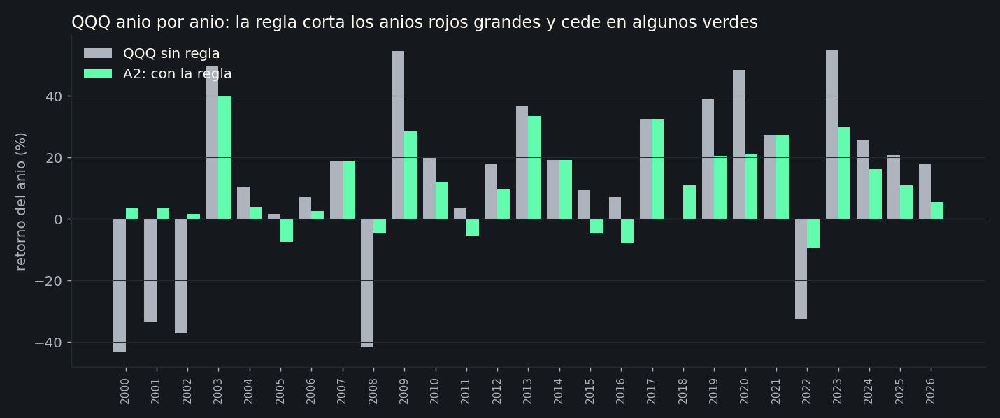
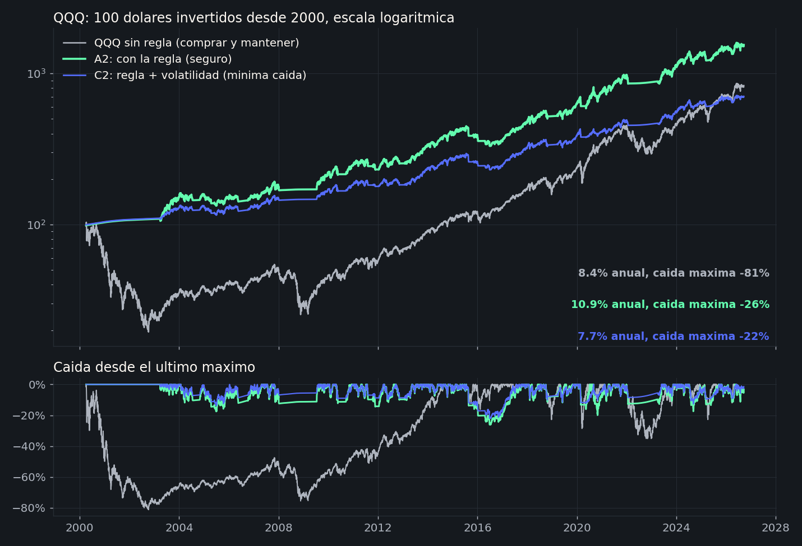
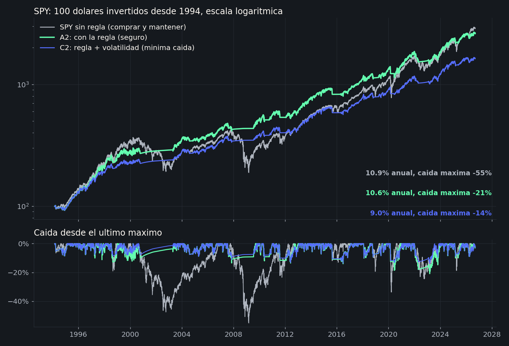
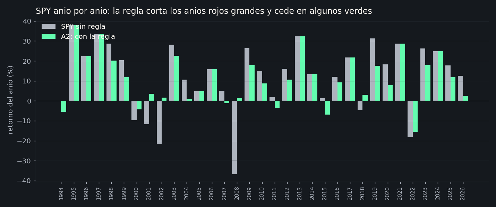
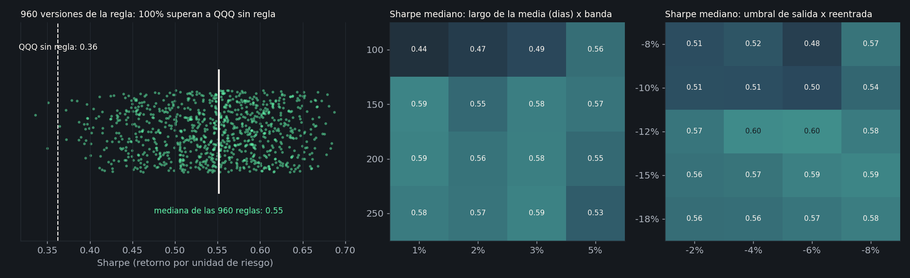
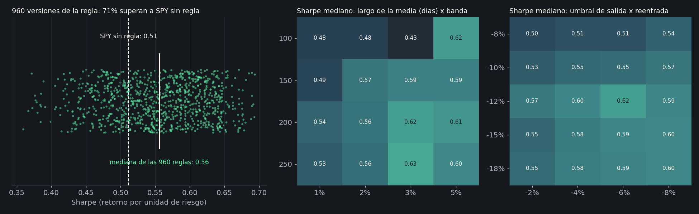

Estar en el Nasdaq cuando sube. Salirse antes de que duela.
Una regla de dos confirmaciones, revisada cada día al cierre, que en 26 años habría dado más retorno que el Nasdaq con un tercio de su peor caída. Acá está explicada sin jerga, con todos los datos para que la descargués y la comprobés con la IA que usés.
La regla, en tres pasos
Cada día, después del cierre del mercado, miramos dos cosas del Nasdaq (el ETF QQQ). Las dos tienen que decir “sí” para estar invertidos. Si alguna dice “no”, la plata está en letras del Tesoro de Estados Unidos, que es lo más parecido a efectivo que rinde algo.
- ¿Está por encima de su promedio de 200 días? Sumamos los últimos 200 cierres y dividimos entre 200. Si el precio está más de 3% por encima de ese promedio, este indicador dice “sí”. Si cae más de 3% por debajo, dice “no”. Entre medias, mantiene lo que decía. Esa franja de 3% evita entrar y salir cada vez que el precio roza la línea.
- ¿Qué tan lejos está de su máximo de las últimas 39 semanas? Si cae más de 12% desde ese máximo, este indicador dice “no”. Vuelve a decir “sí” cuando recupera hasta quedar a 6% o menos del máximo.
- Solo con los dos “sí” estamos 100% en QQQ. Con un “no”, 100% en letras del Tesoro. La orden se ejecuta al cierre del día siguiente. En 26 años esto habría significado cambiar de posición 1.4 veces al año.
Por qué dos indicadores y no uno. Cada uno solo funciona, pero cada uno se equivoca a su manera: el promedio reacciona tarde en las caídas rápidas y la distancia al máximo se asusta en las correcciones normales. Exigir que coincidan quita la mayoría de las señales de un solo día. Con uno solo, el resultado cambiaba hasta 0.14 puntos de Sharpe según el día en que se ejecutara; con los dos, casi nada (0.71 / 0.68 / 0.64 según se opere el mismo día, el siguiente o dos después).
Así está hoy, 18 de septiembre de 2026
QQQ cerró en 721.45. Los niveles exactos que manda la regla:
En el S&P 500 (SPY, cierre 761.69) pasa lo mismo: promedio en 716.28 (sale bajo 694.79), máximo en 777.88 (sale bajo 684.53). Los dos indicadores dicen “sí”.
Por qué funciona: es un seguro, no una bola de cristal
Los mercados suben la mayor parte del tiempo, pero cada tanto viven una caída larga: 2000 a 2002 (el Nasdaq perdió 81%), 2008 (perdió 42% en un año), 2022 (perdió 33%). Esas caídas no ocurren en un día. Empiezan, se confirman, y siguen durante meses. La regla no adivina cuándo empiezan; detecta cuando ya están confirmadas y se hace a un lado.

Lo que hay que tener claro antes de seguir. Este edge no gana al Nasdaq todos los años, ni todas las décadas. Gana cuando hay una caída larga y paga una prima el resto del tiempo. Entre 2010 y 2019 no hubo ninguna caída larga, y la regla rindió 11% anual contra 18% del Nasdaq. Si eso te parece inaceptable, este no es tu producto. Más abajo están todos los números, incluidos los malos.
Resultados en el Nasdaq (QQQ), abril 2000 a septiembre 2026

| Nasdaq (QQQ) | Retorno anual | Volatilidad | Sharpe | Peor caída | Peor año | Tiempo invertido |
|---|---|---|---|---|---|---|
| QQQ sin regla | 8.4% | 26% | 0.36 | -81% | -43% | 100% |
| A2 · la regla (seguro) | 10.9% | 14% | 0.68 | -26% | -9% | 67% |
| B · solo control de volatilidad | 8.6% | 13% | 0.56 | -28% | -18% | 64% |
| C2 · la regla + volatilidad (mínima caída) | 7.7% | 10% | 0.59 | -22% | -6% | 51% |
Qué es cada cosa. Volatilidad es cuánto se mueve la cuenta día a día; menos es más tranquilo. Sharpe es el retorno por unidad de riesgo; más es mejor, y 0.68 contra 0.36 quiere decir casi el doble de retorno por cada punto de sobresalto. C2 es la misma regla pero, cuando está invertida, baja la exposición si el mercado está nervioso: peso = 12% dividido entre la volatilidad de los últimos 60 días, con tope en 100%. Hoy la volatilidad es 20.3%, así que C2 tendría 59% en QQQ y 41% en letras.
Por períodos, porque el promedio esconde cosas
| Sharpe | 2000-2009 (dos caídas largas) | 2010-2019 (subida sin pausa) | Últimos 10 años | Todo |
|---|---|---|---|---|
| QQQ sin regla | -0.15 | 1.01 | 0.84 | 0.36 |
| A2 · la regla | 0.52 | 0.78 | 0.87 | 0.68 |
| C2 · regla + volatilidad | 0.39 | 0.73 | 0.81 | 0.59 |
Ahí está el seguro completo: en la década con dos caídas largas la regla ganó por goleada; en la década de subida sin pausa perdió; en los últimos diez años, que tuvieron 2020 y 2022, empató o ganó un poco. Los últimos 10 años con la regla: 16.1% anual con caída máxima de 20%, contra 20.8% con caída de 35% sin regla.
La comparación que casi nadie hace
Alguien podría decir: “si lo que querés es menos volatilidad, poné la mitad en QQQ y la mitad en letras, sin reglas”. Lo probamos. Una mezcla fija de 53% QQQ y 47% letras tiene la misma volatilidad que la regla, y habría rendido 6.2% anual con caída máxima de 53%. La regla, con el mismo riesgo diario, rindió 10.9% con caída de 26%. Esa diferencia es el valor de saber cuándo salirse.
Y en el S&P 500 (SPY), marzo 1994 a septiembre 2026
La misma regla, con los mismos números, sin cambiar nada. Acá el índice tuvo caídas menos brutales que el Nasdaq, así que el seguro rinde menos: empata el retorno y recorta la caída a menos de la mitad.

| S&P 500 (SPY) | Retorno anual | Volatilidad | Sharpe | Peor caída | Peor año | Sharpe 2000-09 / 2010-19 / últ. 10 |
|---|---|---|---|---|---|---|
| SPY sin regla | 10.9% | 19% | 0.51 | -55% | -37% | -0.07 / 0.89 / 0.75 |
| A2 · la regla | 10.6% | 12% | 0.69 | -21% | -16% | 0.35 / 0.86 / 0.80 |
| B · solo volatilidad | 9.2% | 12% | 0.58 | -30% | -18% | 0.00 / 0.87 / 0.77 |
| C2 · regla + volatilidad | 9.0% | 10% | 0.67 | -14% | -10% | 0.33 / 0.83 / 0.80 |

Contra la mezcla fija de igual volatilidad (64% SPY, 36% letras): la mezcla rindió 8.3% con caída de 38%; la regla, 10.6% con caída de 21%.
“¿Y si esos números están escogidos a dedo?” Las mallas
Es la pregunta correcta. Cualquiera puede encontrar una combinación de parámetros que se vea bien en el pasado. Por eso no probamos una regla: probamos 960 versiones de la misma idea. Promedios de 100, 150, 200 y 250 días; franjas de 1%, 2%, 3% y 5%; máximos de 26, 39 y 52 semanas; salidas a -8%, -10%, -12%, -15% y -18%; reentradas a -2%, -4%, -6% y -8%. Si solo unas pocas funcionan, es suerte. Si casi todas funcionan, hay algo real.


Dos pruebas más que hicimos. Primero, elegimos los parámetros usando solo datos hasta 2009 y los aplicamos a 2010-2026 sin tocarlos: la regla dio Sharpe 0.76 en QQQ y 0.77 en SPY contra 0.87 y 0.78 del índice, con un tercio menos de caída. Segundo, remuestreamos la historia 5.000 veces en bloques de un año: la regla supera al Nasdaq en el 90% de las historias alternativas y al S&P en el 84%. No es certeza; es consistencia.
Los cálculos, paso a paso
Todo lo que hay en esta página se puede reproducir con una hoja de cálculo o pidiéndoselo a una IA. Estas son las fórmulas exactas. La versión completa está en especificacion.md.
Datos: precios diarios de QQQ y SPY de Yahoo Finance (cierre para las señales, cierre ajustado con dividendos para los retornos) y la letra del Tesoro a 3 meses de la Reserva Federal de St. Louis (serie DTB3). Períodos: QQQ desde el 4 de abril de 2000, SPY desde el 1 de marzo de 1994, ambos hasta el 18 de septiembre de 2026.
Fortalezas y límites, sin maquillaje
Lo que la sostiene
- Funciona en casi cualquier versión. 100% de 960 variantes en QQQ y 71% en SPY superan al índice en Sharpe.
- Funciona igual en dos activos distintos con los mismos parámetros. Eso descarta que esté ajustada a la historia de uno.
- Aguanta el walk-forward. Parámetros fijados con datos hasta 2009, aplicados a 2010-2026 sin tocar.
- No depende del día en que operés. Mismo día, día siguiente o dos días después: 0.71, 0.68, 0.64.
- Rota poco. 1.4 cambios al año. Con costos de 0.20% por operación en vez de 0.05% el Sharpe baja 0.02.
- Se puede explicar en tres frases y verificar con una hoja de cálculo. No hay caja negra.
Lo que no promete
- No gana todos los años ni todas las décadas. 2010-2019: 11% anual contra 18% del Nasdaq. Ese es el precio del seguro.
- Toda la ventaja viene de tres episodios: 2000-2002, 2008 y 2022. Si los próximos 25 años no traen una caída larga, la regla habrá costado 2 a 4 puntos al año.
- Reentra tarde. En los rebotes en V (2009, 2020, 2023) se queda con la mitad o dos tercios de la subida.
- El riesgo más grande es humano: abandonarla después de cinco años detrás del índice, justo antes de que pague.
- Es una simulación sobre precios de cierre, con un costo estimado. La ejecución real puede diferir un poco.
Descargá todo y comprobalo con tu IA
No te pedimos que nos creás. Acá están los datos crudos, los cálculos ya hechos día por día y las 960 versiones de la regla. Podés abrirlos en Excel o subirlos a ChatGPT, Claude o Gemini y pedirles que revisen cualquier número de esta página.
- qqq_diario.csv · cada día desde 2000: cierre, promedio, máximo, estado de cada indicador, posición y retornos de QQQ, de la letra y de cada estrategiaDescargar (1.1 MB)
- spy_diario.csv · lo mismo para el S&P 500 desde 1994Descargar (1.4 MB)
- qqq_anual.csv y spy_anual.csv · retorno por año de cada estrategiaQQQ · SPY
- qqq_malla_960.csv y spy_malla_960.csv · las 960 versiones con su Sharpe, retorno y caída por períodoQQQ · SPY
- Precios crudos de Yahoo Finance y letra del Tesoro (FRED DTB3)QQQ · SPY · T-bill
- especificacion.md · la regla y las fórmulas, palabra por palabra, para reproducir todo desde ceroDescargar
- resumen.json · todas las cifras de esta página en un archivoDescargar
Pedile esto a tu IA
Subile qqq_diario.csv (o el de SPY) y especificacion.md, y pegale este texto. Cualquier IA con capacidad de ejecutar código lo hace en un par de minutos.
Te adjunto dos archivos: qqq_diario.csv (datos diarios de QQQ con las señales de una estrategia ya calculadas) y especificacion.md (la definición exacta de la estrategia). Por favor: 1. Usando solo las columnas "cierre", "retorno_QQQ" y "retorno_tbill", recalculá desde cero los indicadores y la señal A2 siguiendo especificacion.md, y comprobá que coinciden con las columnas "ind_sma_dentro", "ind_max_dentro" y "senal_A2" del archivo. Reportá cuántos días difieren. 2. Con la posición desplazada dos días (posicion = senal_A2.shift(2)) y un costo de 0.0005 por cada cambio de posición, calculá el retorno diario de la estrategia y verificá que coincide con "retorno_A2". 3. Calculá para QQQ sin regla y para la estrategia A2, desde 2000-04-04: retorno anual compuesto, volatilidad anualizada, Sharpe (exceso sobre retorno_tbill, anualizado con raíz de 252), peor caída desde máximos y peor año calendario. Los valores que me dieron fueron: QQQ 8.4%, 26%, 0.36, -81%, -43%; A2 10.9%, 14%, 0.68, -26%, -9%. 4. Repetí el punto 3 para 2000-04-04 a 2009-12-31, 2010-01-01 a 2019-12-31 y 2016-09-19 a 2026-09-18. 5. Decime en qué años la estrategia perdió contra QQQ y por cuánto, y si ves algún error o supuesto optimista en la metodología.
Si tu IA te da números distintos, lo más probable es una de tres cosas: usó el cierre ajustado para la señal en vez del cierre normal, no desplazó la posición dos días, o anualizó con 365 días en vez de 252 sesiones. Si después de revisar eso sigue sin coincidir, escribinos con el archivo que te generó y lo revisamos juntos.
Esta página describe una regla de inversión y sus resultados simulados con precios históricos de cierre. Los rendimientos pasados, reales o simulados, no garantizan rendimientos futuros. La simulación asume un costo de 0.05% por cambio de posición y ejecución al cierre del día siguiente a la señal; la ejecución real en una cuenta puede diferir. Nada de lo anterior es una recomendación personalizada de inversión. Datos de precios: Yahoo Finance. Tasa libre de riesgo: Reserva Federal de St. Louis, serie DTB3. Última actualización: 18 de septiembre de 2026.